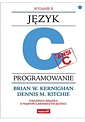
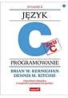

Wykłady
| Nr. | Tytuł | Do pobrania |
|---|---|---|
| Wykład 1: | Języki programowania i środowiska programistyczne; Wstęp do C++; |

|
| Wykład 2: | Algorytmy; Instrukcje wyboru; Pętla for |
|
| Wykład 3: | Iteracja, Pętle for, while i do while |
|
| Wykład 4: | Tablice |
|
| Wykład 5: | Funkcje. Przekazywanie argumentów do funkcji |
|
| Wykład 7: | Przykład praktyczny - Gra w okręty |
|
| Wykład 8: | Łańcuchy znaków. Klasa string |
|
| Wykład 9: | Łańcuchy znaków. Klasa string c.d. - przykłady | |
| Wykład 10: | Pliki tekstowe |
|
| Wykład 11: | Struktury, unie, pola bitowe |
|
| Wykład 12: | Wskaźniki i zmienne dynamiczne |
|
| Wykład 13: | Rekurencja |
|
| Programy z wykładów: | Kierunek: Informatyka |

|
| Programy z wykładów: | Kierunek: Informatyka Techniczna |
|
| Programy z wykładów: | Kierunek: Informatyka - studia niestacjonarne |
|
| Uwaga! | Przypominam - przeglądanie prezentacji nie zastąpi udziału w wykładzie! |


 
